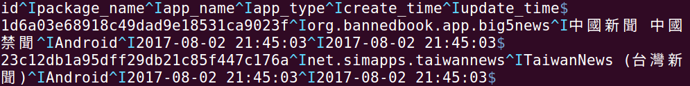

Vim
(1) 帮助
(2) 删除字符
1 2 3 4 5 6 7 8 9 10 11 12
| x s dd db dw daw
|
(3) 缩进
(4) 移动
(5) 编辑
(6) 搜索
1 2 3 4 5 6 7 8 9 10 11 12 13 14 15 16
| fa Fa ; , /content /http:\/\/www\.uzzf\.com\/apk\/383198\.html n N
|
(7) Operator + Motion = Action
(8) 返回正常模式
(9) Visual Mode
(10) 删除空白行
:g will execute a command on lines which match a regex. The regex is ‘blank line’ and the command is :d (delete)
(11) 显示 tab 符号
Easiest method is to do :set list, which will show tabs as ^I and end of line as $.

使用 :set nolist 来取消显示
查找文件
1
| :find SimpleExecutor.java
|
多窗口
1 2 3 4 5 6 7 8 9 10
| <C-w>c <C-w>o <C-w>s <C-w>v <C-w>w
|
工作路径
1 2 3 4 5 6 7 8
| # 查看当前工作路径 ：pwd # 查看当前文件所在的全路径 <C-g> # 在工作区的子目录下递归搜索文件 (最好把这句话放在 vimrc 中) set path=$PWD/** # 打开当前文件所在的目录 :Ex
|
上下移动
不响应键盘的时候
退出
vimrc 文件的注释行
1
| "This is a comment in vimrc. It does not have a closing quote
|
查找并替换
1 2 3 4 5 6 7 8 9 10 11
| :%s/foo/bar/g :s/foo/bar/g :%s/foo/bar/gc :5,12s/foo/bar/g
|
借助 tmux 实现分屏
1 2 3 4 5 6 7 8 9 10
| Ctrl - b " # 垂直分屏 Ctrl - b % # 显示窗口号 Ctrl - b q # 在窗口间切换光标 Ctrl - b ←↑→↓ # 关闭当前窗口 Ctrl - b x
|
临时显示文件路径